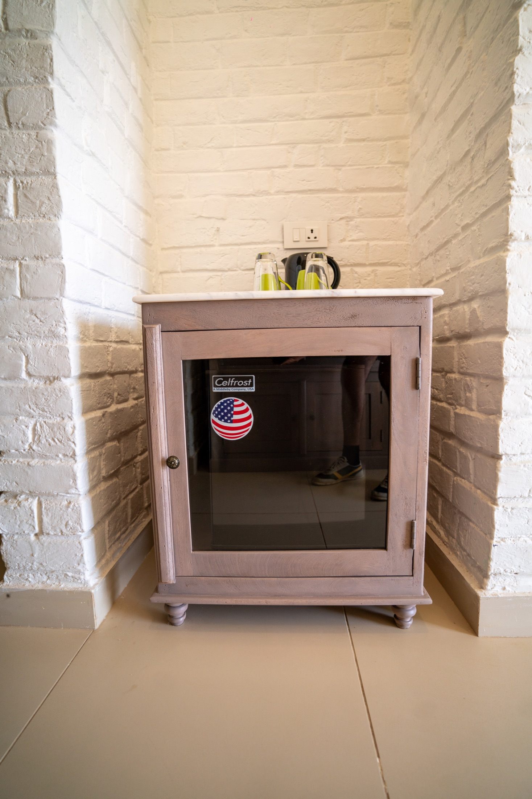

The Lantern Courtyard
Slow dinners with brass service, regional grills, smoked chutneys, and old-world hospitality.
Dining
Farm to forest
Breakfast on the verandah, thali lunches under shade, sundowners by the pool, and private dinners where lanterns turn leaves into gold.
Slow dinners with brass service, regional grills, smoked chutneys, and old-world hospitality.

A private clearing dressed with linen, fire, fresh herbs, and a menu composed for the night.

Seasonal tasting menus inspired by millet, desert berries, local dairy, smoke, and spice.